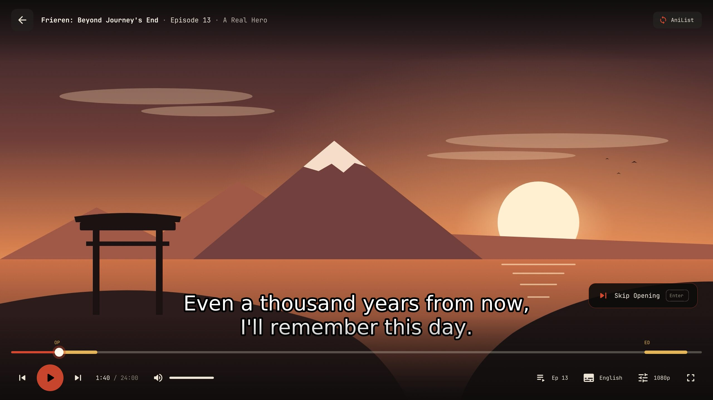
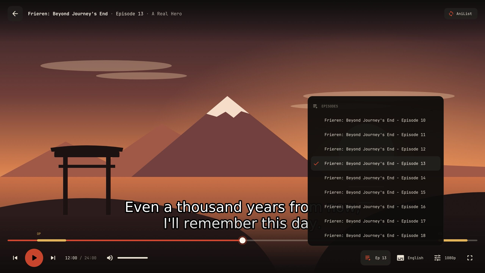
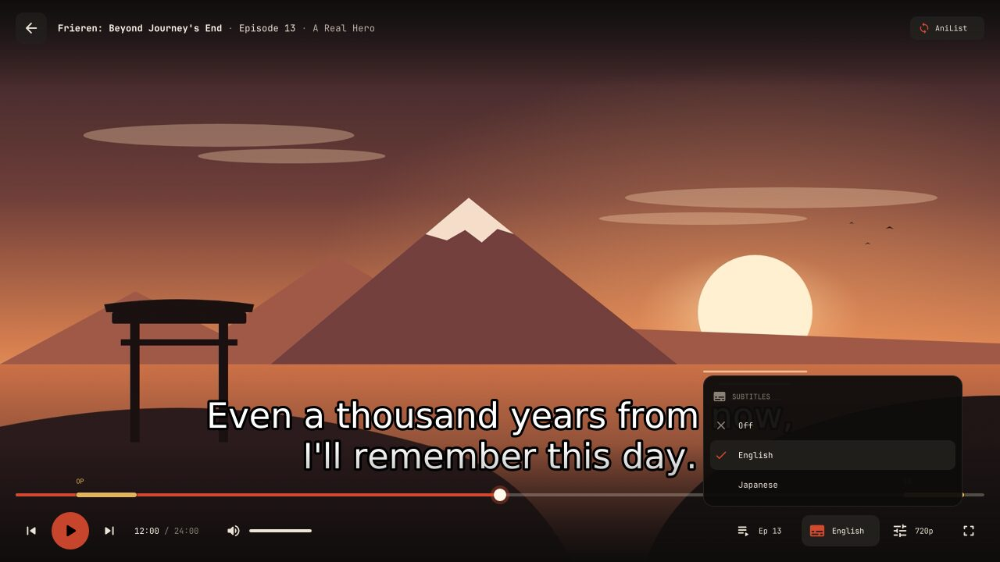

お任せ · LATEST RELEASE
otakase finds the episode, plays it in mpv, skips the opening and keeps AniList or MyAnimeList in sync. Free and open source.
DOWNLOAD →Its own player look with chapter marks and a next-episode card. Your own mpv settings stay as they are.
Openings, endings, recaps and filler episodes, skipped automatically or one key away.
AniList, MyAnimeList, both, or local only. Your progress updates when the episode ends.
Chromecast, DLNA TVs and Kodi, with skips and the next episode still working.
Pick up mid-episode, even on another computer.
Menus and player take your desktop's colours, from pywal and base16 to KDE, GNOME, macOS and Windows.
How it works
Your list opens first, with the show you stopped halfway at the top. Or type to search any title.
otakase finds a working source, picks sub or dub, and opens the episode in mpv where you left it.
When the credits roll your list is updated, and the next episode is one click away.
The player



Same player on macOS, Windows and Linux: it is mpv with otakase's skin.
Casting
Run otakase -cast and pick the TV. Skips, resume and the next episode keep working, and the terminal becomes the remote.
Colours
otakase ships in Shu, the vermilion of a torii gate. If your desktop has a theme, the menus and the player take its colours instead.
Read from pywal, base16, KDE, GNOME, macOS, Windows or Omarchy, or a colours file of your own.
Questions
Yes. otakase is open source under the GPL-3.0, with no ads, no accounts of its own and nothing to pay for.
No. It is a player front end: it finds episodes that are already public on the web and hands them to mpv. Nothing is uploaded or stored by the project.
No. Pick local tracking on first launch and your progress stays on your computer. You can sign in to AniList, MyAnimeList or both later.
mpv, which the install commands above bring along. The Windows installer carries its own copy. rofi is optional on Linux.
Yes. With AniList or MyAnimeList, otakase keeps the minute you stopped at with your list, so another computer picks up mid-episode.
No. otakase continues curd, and your settings, sign-ins and history move over on first launch.
sudo apt install mpv curl
curl -Lo otakase \
https://github.com/TheXykril/otakase/releases/latest/download/otakase-linux-x86_64
chmod +x otakase
sudo install -Dm755 otakase /usr/bin/otakase
sudo ln -sf otakase /usr/bin/otkFor ARM64, download otakase-linux-arm64 instead. rofi, libnotify and ffmpeg are optional extras.
sudo pacman -S --needed go git mpv
git clone https://github.com/TheXykril/otakase.git
cd otakase
makepkg -siBuilds with the bundled PKGBUILD so pacman tracks it.
brew install mpv
curl -Lo otakase \
https://github.com/TheXykril/otakase/releases/latest/download/otakase-macos-universal
chmod +x otakase
sudo mv otakase /usr/local/bin/
sudo ln -sf otakase /usr/local/bin/otkPaste into Terminal. The universal build runs on Apple Silicon and Intel; otakase-macos-arm64 and otakase-macos-x86_64 are smaller.
winget install TheXykril.OtakasePaste into PowerShell or Windows Terminal. It comes with mpv and adds otakase and otk to your PATH; open a new terminal afterwards.
No winget? Get the installer, or the standalone otakase-windows-x86_64.exe with your own mpv.
Then, on any system
otakaseotakase -cotakase -castotakase -dubotakase -download -episodes 1-12otakase -eotakase -uComing from curd? Your settings, sign-ins and history move over on first launch.